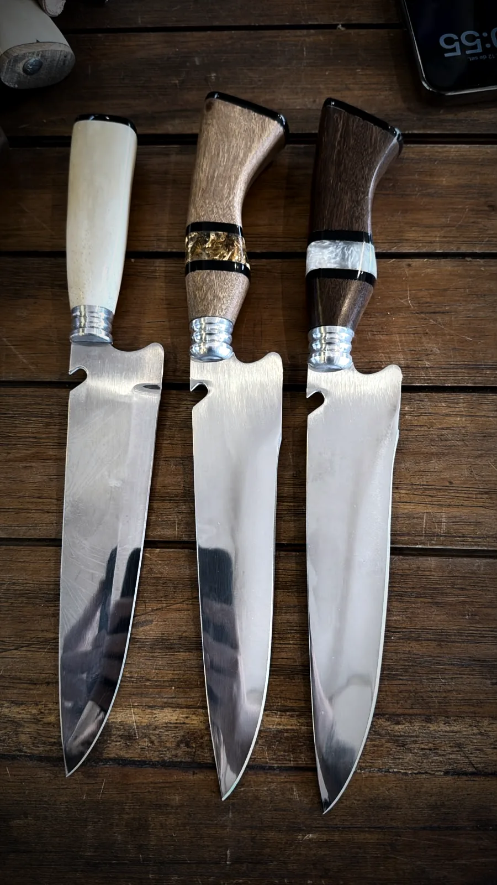
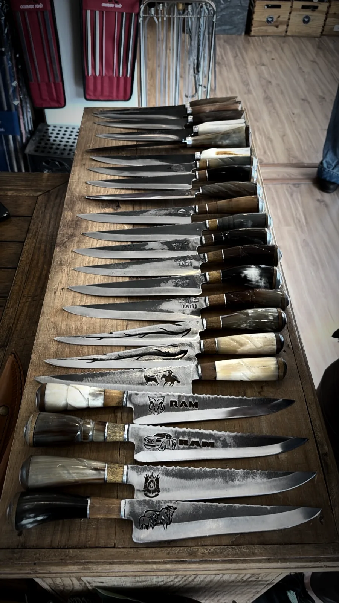
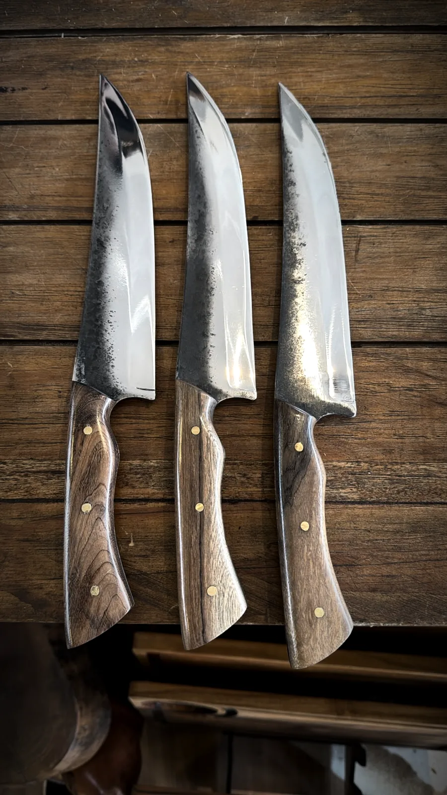

01
Forja
O aço é aquecido e martelado até abrir no formato da lâmina. É aqui que a peça ganha o corpo e a espessura do lombo.
Forjadas, moídas e temperadas à mão, uma de cada vez. Aço carbono ou inox, cabo em osso, chifre ou madeira, escolhido peça a peça.

O ofício
Cada faca é forjada, moída e temperada à mão.
A forja abre o aço. A têmpera fixa a dureza. A moagem define o fio. Nenhuma dessas etapas é feita em série, e é por isso que duas peças nunca saem idênticas da bancada.
61
HRC no aço carbono
12°
de fio por lado
7 a 12"
de lâmina na bancada

Dois aços
Arraste o fio para comparar. O carbono corta mais fundo e pede óleo. O inox aguenta umidade e pede menos atenção.

Aço carbono
Aço inox
Da bigorna à caixa
O caminho de uma peça na oficina, do aço cru até a gravação final.
Encomendar sob medida01
O aço é aquecido e martelado até abrir no formato da lâmina. É aqui que a peça ganha o corpo e a espessura do lombo.
02
O choque térmico fixa a dureza. O carbono fecha em 61 HRC, o inox entre 58 e 60 HRC.
03
A lâmina vai ao esmeril e o ângulo do fio é definido à mão, lado a lado, até o corte ficar parelho.
04
Osso, chifre ou madeira estabilizada, ajustados um a um. Virola de alumínio, pinos de latão e, quando pedido, anel de resina com folha de ouro.
05
A marca vai na lâmina antes da peça ir para a bainha de couro. Em pedidos empresariais, entra o logotipo do cliente.
Antes de comprar
A mesma orientação que sai impressa dentro da caixa, para você saber o que a faca pede antes de escolher o aço.
Empresarial
Pedidos a partir de dez peças, com gravação no cabo ou na base da lâmina. Cada unidade sai com embalagem e a mesma escolha de cabo do catálogo.
Simular a gravaçãoFale com quem forja